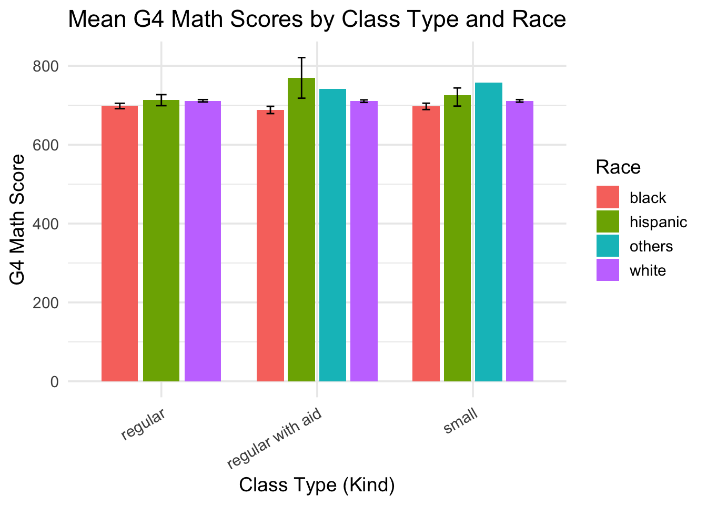

Wisdom about Tennessee STAR
Background Information
The Tennessee STAR dataset comes from a large-scale, multi-year educational experiment conducted in the 1980s across dozens of Tennessee schools. In the study, over 6,000 kindergarten through third-grade students were randomly assigned to either small classes (13–17 students), regular-sized classes (22–25 students), or regular-sized classes with a teacher’s aide. The goal was to determine whether smaller class sizes improved academic performance, particularly in mathematics and reading. Academic outcomes were measured using standardized and curriculum-based tests, and the dataset also includes key student and classroom characteristics such as race, sex, school, and class assignment.
Scenarios
Imagine that you are an elementary school principal in Chicago. You want to predict student performance. Fortunately, you have data today for your current students like the data available in the STAR project.
Imagine you work for the Texas Department of Education. You want to understand student performance in small classes, relative to big classes, in Dallas. In Texas, there is data available like the data in the STAR project.
Data
- Explore the data. What is the outcome variable? How it is distributed?
# A tibble: 6,325 × 4
g4math kind race yearssmall
<dbl> <chr> <chr> <dbl>
1 NA regular with aid white 0
2 706 regular with aid black 0
3 711 regular with aid white 0
4 672 small black 4
5 NA regular white 0
6 NA regular with aid white 0
7 668 small white 4
8 NA regular with aid white 0
9 709 small white 4
10 698 regular white 0
# ℹ 6,315 more rowsPreceptor Table
What sorts of questions are we trying to answer?
What is the causal effect of being in a small class compared to a large class on student performance?
In order to build the Preceptor Table, we need to answer some questions: Is the model causal or predictive? What are units? What are the outcomes? What are the covariates? What are the treatments?
- it is a causal model
- units are individual students
- g2math=outcome
- race=covariate
- treatment=classtype
Population Table
Describe in words the Population Table. For each of the four key assumption of Justice — validity, stability, representativeness, and unconfoundedness — provide a counter-example, if relevant. Describe the mathematical Structure of the model.
More Information
Frederick Mosteller (1995) “The Tennessee study of class size in the early school grades.” The Future of Children, vol. 5, no. 2, pp. 113–127. Data cleaned and discussed in “Quantitative Social Science: An Introduction” by Kosuke Imai.
The Tennessee class size project is a three-phase study designed to determine the effect of smaller class size in the earliest grades on short-term and long-term pupil performance. The first phase of this project, termed Project STAR (for Student-Teacher Achievement Ratio), was begun in 1985, when Lamar Alexander was governor of Tennessee. Governor Alexander, who later served as secretary of education in the cabinet of President George Bush, had made education a top priority for his second term.
The legislature and the educational community of Tennessee were mindful of a promising study of the benefits of small class size carried out in nearby Indiana, but were also aware of the costs associated with additional classrooms and teachers. Wishing to obtain data on the effectiveness of reduced class size before committing additional funds, the Tennessee legislature authorized this four-year study in which results obtained in kindergarten, first, second, and third grade classrooms of 13 to 17 pupils were compared with those obtained in classrooms of 22 to 25 pupils and in classrooms of this larger size where the teacher was assisted by a paid aide. Both standardized and curriculum-based tests were used to assess and compare the performance of some 6,500 pupils in about 330 classrooms at approximately 80 schools in the areas of reading, mathematics, and basic study skills. After four years, it was clear that smaller classes did produce substantial improvement in early learning and cognitive studies and that the effect of small class size on the achievement of minority children was initially about double that observed for majority children, but in later years, it was about the same.
The second phase of the project, called the Lasting Benefits Study, was begun in 1989 to determine whether these perceived benefits persisted. Observations made as a part of this phase confirmed that the children who were originally enrolled in smaller classes continued to perform better than their grade-mates (whose school experience had begun in larger classes) when they were returned to regular-sized classes in later grades. Under the third phase, Project Challenge, the 17 economically poorest school districts were given small classes in kindergarten, first, second, and third grades. These districts improved their end-of-year standing in rank among the 139 districts from well below average to above average in reading and mathematics. This article briefly summarizes the Tennessee class size project, a controlled experiment which is one of the most important educational investigations ever carried out and illustrates the kind and magnitude of research needed in the field of education to strengthen schools.